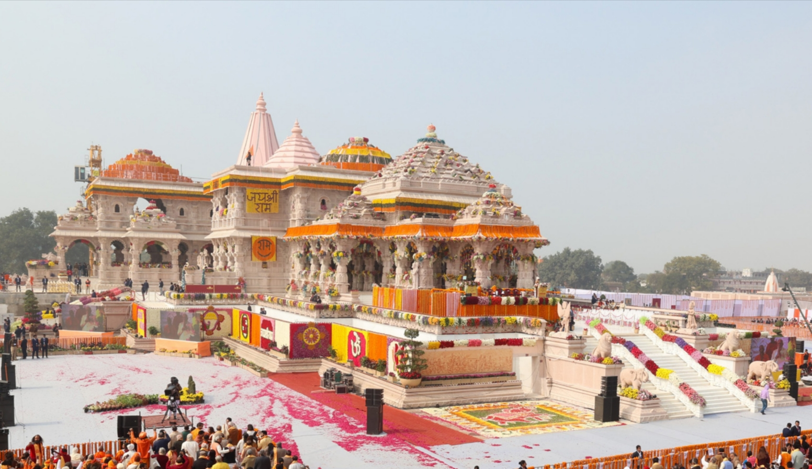

The Ram Mandir in Ayodhya is one of the most significant religious and cultural landmarks of India. Dedicated to Lord Ram, the temple holds immense importance for millions of Hindus across the world. Ayodhya, located in Uttar Pradesh, is believed to be the birthplace of Lord Ram, who is worshipped as an incarnation of Lord Vishnu. For centuries, Ayodhya has been considered a sacred city and a symbol of India’s spiritual heritage. The construction of the Ram Mandir is the result of a long history of faith, devotion, and struggle. After decades of disputes and legal proceedings, the Supreme Court of India in November 2019 gave a historic verdict allowing the construction of the temple at the Ram Janmabhoomi site. Following this, the foundation stone of the temple was laid by the Hon’ble Prime Minister Narendra Modi on 5th August 2020. The design of the Ram Mandir reflects the grandeur of traditional Indian temple architecture. Built in the Nagara style, the temple is constructed mainly with pink sandstone and marble. It is planned to be a magnificent three-storey structure with intricately carved pillars, domes, and sanctum. The temple complex also includes facilities for pilgrims and cultural centers to promote Indian values and traditions. The Ram Mandir is not just a place of worship but also a symbol of faith, unity, and cultural pride. It represents the victory of truth and devotion and is expected to become a global center of spiritual tourism, attracting visitors from all over the world.